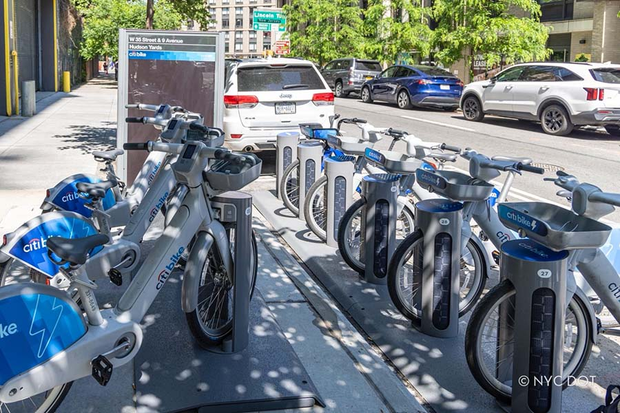
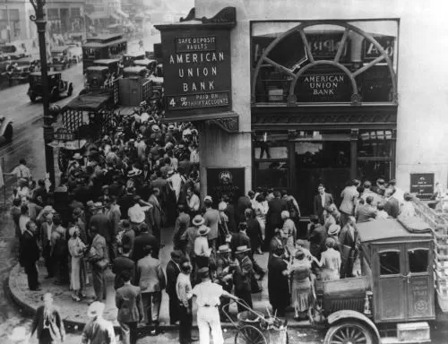

About Me
Hi, I'm Mandy, and I'm glad you found your way here. I'm a data analyst, which mostly means I love a good question or problem and a messy dataset to investigate. I enjoy spotting trends, digging into tough questions, and turning what I find into visuals that help people make better decisions.
My first experience with data didn’t happen at a desk. It happened aboard an aircraft carrier. I spent five years in the U.S. Navy as an Aviation Ordnanceman, first with Strike Fighter Squadron VFA-106 and then aboard the USS Abraham Lincoln, where I tracked and validated data for 10,000+ critical assets, weapon systems, and ordnance.
After the Navy, I earned a B.A. in Global Studies with a minor in Data Science from UNC Chapel Hill. You can usually find me working in SQL, Tableau, Excel, or R, following my curiosity through various datasets, spanning different domains that interest me, whether that's sports, healthcare, environmental issues, or inventory tracking.
Outside of work, you'll find me running, reading, or watching sports like Formula 1, tennis, soccer, and the WNBA. I also speak Haitian Creole, French, and Japanese.
Tools: SQL (joins, CTEs, window functions) · Excel (XLOOKUP, pivot tables, dashboards) · Tableau · R · Python · QGIS

Explored 2.12M Citi Bike trips in MySQL to find where demand concentrates and where the network falls behind it. Demand peaks at 5 PM (185,704 trips), the window when bike shortages are most likely. Of 2,100 stations, 13 lose 200+ more bikes than they receive, so I delivered rebalancing recommendations to close those distribution gaps. Casual users also make 3x more round trips than subscribers, a distinct segment worth targeting for growth.
Tools: MySQL (CTEs, window functions, aggregates)

Analyzed 9,216 emergency department encounters (April 2019 to October 2020) in Tableau. The average wait held at 35 minutes across departments, age groups, days, and hours, and it had no measurable effect on satisfaction (r = −0.02 across 2,517 rated visits). The group that stood out was patients 66+, who rated their visits lowest (4.72 vs 5.05 for everyone else), pointing to experience factors beyond speed. General Practice and Orthopedics accounted for 74% of department referrals, a direct input for capacity planning.
Tools: Tableau (dashboards, filters, parameters, KPI tracking), Kaggel datasets
Modeled what drives medical insurance charges across 1,338 policyholders. Smoking status is the dominant driver, adding roughly $21,000 to expected charges, and its effect grows at higher BMI. A multiple linear regression with a BMI × smoking interaction reached an R² of 0.81 (RMSE $5,100); the interaction term alone cut prediction error by $1,208. I also built a 4-tier risk segmentation in which the high-risk group costs 5.2x more than standard policyholders.
Tools: R (regression, correlation analysis, ggplot2)

Built an interactive Excel dashboard on $84.8M in bike sales revenue across 6 countries (2015 to 2016) to show where profit was won and lost by product category and geography. The headline: a $1.07M year-over-year profit decline in the Bikes category drove an overall $495K profit decrease. Quarterly operating margin swung 18 points, from a 33% low to a 51% peak.
Tools: Excel (pivot tables, data cleaning, dashboard)

A mixed-methods research project combining computational text analysis, data visualization, and qualitative narrative analysis to explore gendered patterns in how socioeconomic status related to education in the Southern Life Histories collection. It's the project where my Global Studies background and my data work meet: numbers that only make sense with the human context around them.
Tools: R Markdown (text mining, visualization)